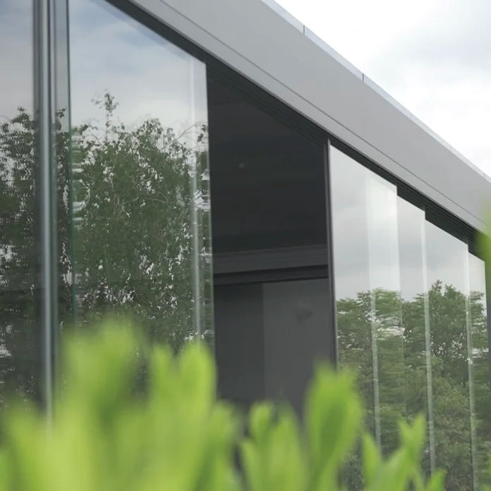
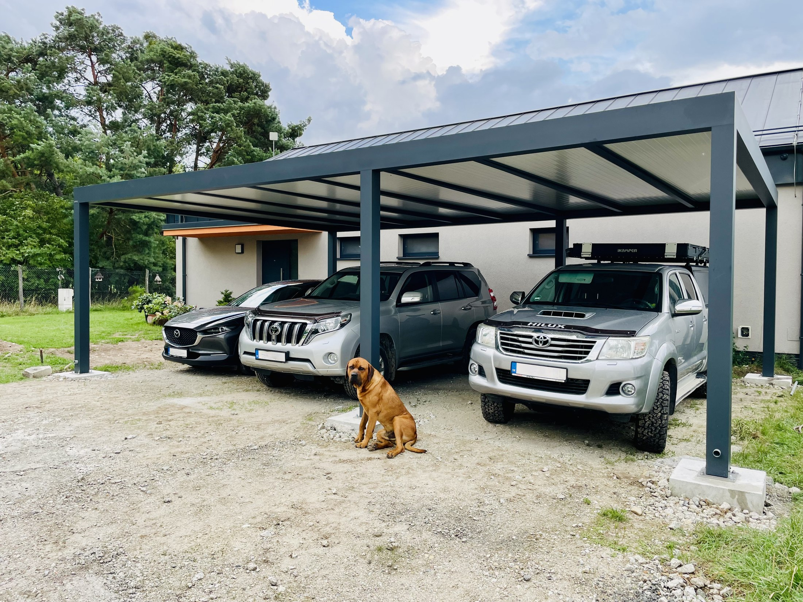

Strecha
Pevná, sklenená alebo lamelová
- Izolačný panel, sklo alebo otočné lamely
- Voda odchádza prievlakom a stĺpom
- Spád skrytý v konštrukcii

Pevná strecha, sklenená výplň alebo bioklimatické lamely, ktoré sa otočia podľa toho, či chcete tieň alebo slnko. Boky sa dajú dopĺňať postupne.
Z čoho je to postavené
Väčšina zákazníkov začne strechou a boky rieši až o rok. Konštrukcia s tým počíta, takže sa nič nemusí prerábať.
Prejsť na nezáväznú ponukuStrecha

Boky

Výbava
Skladba konštrukcie
Prístrešky Koverta staviame na oceľovom skelete a obliekame ich do hliníka. Oceľ nesie, hliník sa nekazí a povrch je práškový lak — kombinácia, ktorá po pätnástich rokoch vyzerá rovnako ako prvý deň.
Prejsť na nezáväznú ponuku| Vrstva | Z čoho | Na výber |
|---|---|---|
| Nosná konštrukcia | Oceľové stĺpy a prievlaky, zvárané vo vlastnej výrobe | Rozmer profilu podľa rozponu a snehovej oblasti |
| Obklad | Hliníkové profily po celej konštrukcii | Ostrá hrana alebo mäkčie zaoblenie |
| Povrch | Práškový lak, vypálený v peci | Ktorýkoľvek odtieň z palety RAL, aj štruktúrovaný |
| Strecha | Trapézový plech alebo ISO panel | ISO panel tlmí dážď a izoluje; plech je tenší a lacnejší |
| Odvodnenie | Odkvap v ráme, zvod vnútri stĺpa | Vývod do zeme, do dlažby alebo do existujúcej kanalizácie |
| Výplne bokov | Drevené alebo hliníkové lamely, plná stena | Po celej výške alebo do polovice, drevodekor v odtieni fasády |
| Elektro | Prípojka vedená vnútri stĺpa | LED v podhľade, zásuvka, príprava na fotovoltiku |
| Kotvenie | Betónové pätky alebo kotvenie do existujúcej plochy | Pätky ako doplnková služba k montáži |
Prístrešok je konštrukcia, nie tienenie: počítame ho na zaťaženie snehom podľa snehovej oblasti, v ktorej stojíte. Rovnaká zostava sa preto v Nitre a pod Tatrami nenavrhuje rovnako.
Podklad a kotvenie
Podklad riešime podľa toho, čo na mieste je. Ak tam ešte nič nie je, pätky vieme vykopať a vybetónovať my — je to doplnková služba, nie automatická súčasť montáže. Kóty aj rozmiestnenie stĺpov dostanete v návrhu, takže sa dá pripraviť aj svojpomocne.



Čo je v cene
Z našich montáží
Bioklimatická pergola aj pevné zastrešenie — v oboch prípadoch systém, ktorý si nevyžaduje údržbu.

Záhradný prístrešok s dreveným obkladom nad terasou

Krytá terasa s lamelovým tienením

Bioklimatická pergola so sklopnými lamelami

Pergola s LED osvetlením v profile

Pergola nad sedením pri vinárstve

Prístrešok s pevnou strechou nad vstupom
Časté otázky
Nenašli ste odpoveď? Zavolajte nám, poradíme aj bez záväzku.
+421 948 482 266Áno. Konštrukcia sa navrhuje na zaťaženie podľa lokality — od nížin po hory. Pri zameraní zvolíme profil aj rozpon tak, aby vyhovel norme pre vaše miesto.
Nie. Väčšina zákazníkov začne strechou a ZIP rolety alebo sklo dopĺňa neskôr. Konštrukcia s tým počíta.
Hliník s práškovým lakom stačí opláchnuť vodou. Lamely sa dajú otočiť do zvislej polohy, takže sa k nim dostanete z jednej strany.
Rozhoduje zastavaná plocha. Prístrešok do 50 m² sa vo väčšine prípadov rieši ohlásením drobnej stavby na miestnom stavebnom úrade — tlačivo, jednoduchý situačný nákres a doklad o vzťahu k pozemku. Nad 50 m², pri stavbe tesne na hranici pozemku alebo v pamiatkovej zóne úrad zvyčajne žiada stavebné povolenie.
Posledné slovo má vždy váš stavebný úrad. Pri zameraní vám povieme, do ktorej kategórie váš zámer spadá, a pripravíme podklady, ktoré k tomu treba: rozmery, osadenie na pozemku a výkres konštrukcie.
Áno. Kotvíme cez zateplenie do nosnej steny s roznášacím prvkom, aby sa izolácia nestláčala a nevznikal tepelný most. Pri kotvení k stene ubudne predný rad stĺpov a terasa ostane priechodná.
Do žľabu v ráme a odtiaľ zvodom vnútri stĺpa do zeme. Po fasáde ani po terase nič netečie a zvonku nevidno žiadnu rúru. Vývod napojíme do vsaku, do dlažby alebo na existujúcu kanalizáciu.
Riešime to buď jednou konštrukciou s viacerými poľami, alebo dvomi modulmi vedľa seba v rovnakom odtieni. Rozmiestnenie stĺpov navrhneme tak, aby nestáli v ceste — to je presne to, na čo je zameranie.
Bokmi áno: ZIP rolety zastavia vietor a nízke slnko, sklenené panely dážď aj prievan. Vykurovaný priestor z terasy nespravíme — na to je zimná záhrada, ktorá už podlieha stavebnému konaniu.
Cenová ponuka zadarmo
Pri zameraní zistíme, ako sa dá pergola napojiť na dom a kam odvedieme vodu. Zameranie aj ponuka sú zadarmo.